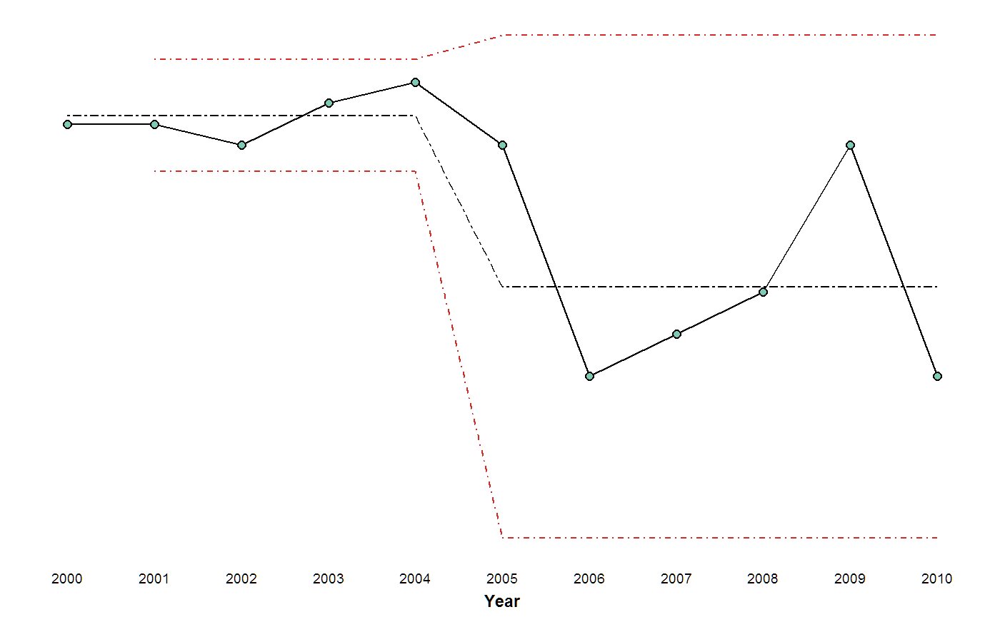
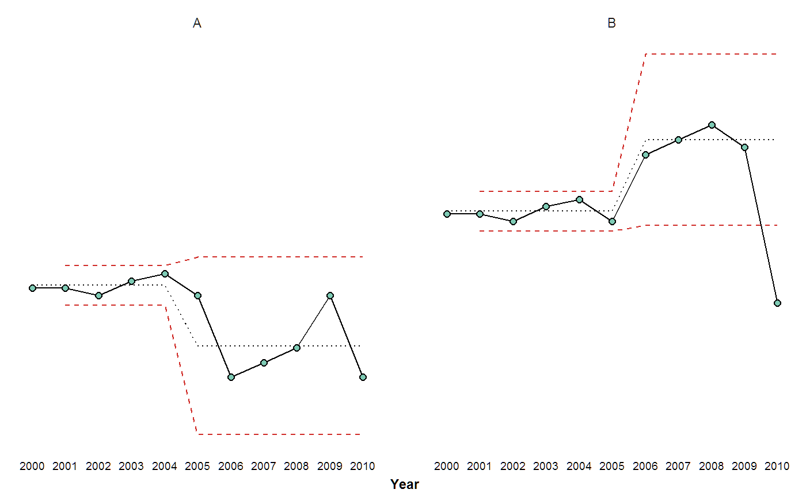

xmrchart-howto.RmdIf you’re not in the right place, maybe you want to go to our Analysis Home.
The following is how to use the xmr_chart function in xmrr.
First, xmrr::xmr expects tidy data, with at least one column that for a time variable, and another for the actual measurement variable.
df## # A tibble: 11 x 3
## Year Measure Group
## <int> <dbl> <chr>
## 1 2000 55 A
## 2 2001 55 A
## 3 2002 54 A
## 4 2003 56 A
## 5 2004 57 A
## 6 2005 54 A
## 7 2006 43 A
## 8 2007 45 A
## 9 2008 47 A
## 10 2009 54 A
## 11 2010 43 Axmr_chart only takes data that looks like this.
df %>% xmr("Measure", recalc = T)## # A tibble: 11 x 9
## Year Measure Group Order `Central Line` `Moving Range`
## <int> <dbl> <chr> <dbl> <dbl> <dbl>
## 1 2000 55 A 1 55.4 NA
## 2 2001 55 A 2 55.4 0
## 3 2002 54 A 3 55.4 1
## 4 2003 56 A 4 55.4 2
## 5 2004 57 A 5 55.4 1
## 6 2005 54 A 6 47.2 3
## 7 2006 43 A 7 47.2 11
## 8 2007 45 A 8 47.2 2
## 9 2008 47 A 9 47.2 2
## 10 2009 54 A 10 47.2 7
## 11 2010 43 A 11 47.2 11
## # ... with 3 more variables: `Average Moving Range` <dbl>, `Lower Natural
## # Process Limit` <dbl>, `Upper Natural Process Limit` <dbl>The following is how you use some of the arguments. I show them here one-by-one, but they can be all used at once, and in any order.
df %>%
xmr("Measure", recalc = T) %>%
xmr_chart("Year", "Measure", boundary_linetype = 4, central_linetype = 6)
Often we’ll have datasets that contain multiple factors. With dplyr it’s possible to pipe a grouped dataframe into the function and have the function operate on a per-group basis.
We also need to wrap the xmr funciton in the generic do() function for it to work on each group.
This dataframe can be visualized using the xmr_chart function, then because it outputs a ggplot2 object, it can be faceted by an other factor in the data.
df_group %>%
group_by(Group) %>%
do(xmr(., "Measure", recalc = T)) %>%
xmr_chart("Year", "Measure") +
facet_wrap(~Group)